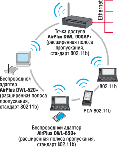

Ростислав Сергеев
Архитектура беспроводных сетей (WLAN) предполагает использование широкого ассортимента устройств беспроводного доступа. Помимо традиционных базовых станций, или точек доступа (см. "BYTE/Россия" №10'2002), в состав беспроводных сетей может входить такое оборудование, как беспроводные карты и адаптеры, внешние мосты и шлюзы (типа "точка-точка"), а также радиомаршрутизаторы, поддерживающие заданную дисциплину обслуживания пользователей в эфире.
Сертифицированное организацией WECA (http://www.wi-fi.org) оборудование WLAN должно обеспечивать функциональную совместимость продуктов разных поставщиков. Однако на практике каждая компания старается убедить клиентов, что максимальная производительность обеспечивается только тогда, когда в беспроводной сети будет использован модельный ряд одного производителя. Этого принципа придерживаются все ведущие компании, поскольку каждая из них выпускает практически полный "джентльменский набор" продуктов для сетей WLAN - от точек доступа и шлюзов до клиентского оборудования (беспроводных карт и адаптеров) и их аксессуаров (внешние антенны, переходники и т. п.).
В настоящее время оборудование для беспроводных сетей выпускают более сотни различных фирм, и их число постоянно увеличивается. Наряду с известными производителями телекоммуникационного оборудования, скажем, Cisco Systems, Intel, D-Link, Proxim, Linksys, 3Com, Alvarion и Enterasys, в этом сегменте сейчас действует, например, и Microsoft, которая никогда ранее не занималась выпуском подобного оборудования.
Беспроводные технологии включают около десятка различных стандартов, однако доминирует сейчас 802.11b, известный также как Wi-Fi. Он рассчитан на работу в диапазоне частот 2,4 ГГц и обеспечивает пропускную способность до 11 Мбит/с (рис. 1). Стандарт определяет только один метод передачи - DSSS. Вследствие этого обратная совместимость есть только с сетями 802.11 DSSS (режим 802.11 FHSS в изделиях 802.11b не поддерживается). Для увеличения скорости передачи сети 802.11b используется более совершенная техника модуляции с помощью дополнительного кода CCK (Complementary Code Keying). В ней вместо кода Баркера (стандарт 802.11) применяется последовательность кодов, называемых дополнительными последовательностями (Complementary Sequences).
| Рис. 1. Изменение реальной чувствительности оборудования 802.11b.
|
Клиентские карты и адаптеры
Архитектура беспроводных сетей построена таким образом, что пользователи могут общаться друг с другом либо непосредственно, либо через сетевое оборудование - точки доступа, маршрутизаторы, мосты и шлюзы (рис. 2). И в том и в другом случае требуется, чтобы у пользователя было какое-либо оконечное устройство. Различают три основных вида клиентских беспроводных устройств:
- карты PCMCIA (PCMCIA cards), устанавливаемые в разъемы PCMCIA ноутбуков и других портативных компьютеров;
- карты PC (PC cards), выполненные в виде плат, устанавливаемых в свободный слот настольных компьютеров;
- адаптеры USB (USB adapters), представляющие собой компактное устройство, с помощью которого ноутбуки и настольные компьютеры могут подключаться к беспроводной локальной сети через порт USB.
| Рис. 2. Сетевая инфраструктура с точками доступа и клиентскими адаптерами.
|
Наиболее распространенный вид клиентского оборудования - карта PCMCIA, в состав которой входит приемопередатчик и небольшая портативная антенна. Стандарт PCMCIA разрабатывался прежде всего для ноутбуков, а поэтому такие карты наиболее экономичны, компактны и потребляют минимум энергии. Немаловажен и тот факт, что PCMCIA-карты зачастую дешевле своих аналогов для шины PCI или ISA. К тому же благодаря использованию технологии Plug and Play инсталляция PCMCIA-карты очень проста.
Клиентские устройства, входящие в модельный ряд одного производителя, обычно имеют идентичные характеристики, отличаясь лишь конструкцией, дизайном и интерфейсными возможностями. Так, выходная мощность передатчиков у различных видов клиентских адаптеров 802.11b обычно составляет 12-15 дБм, типовой ток потребления зависит от режима работы и обычно не превышает 350 мА в режиме передачи, 250 мА в режиме приема и 10 мА в режиме ожидания. Цены на клиентские карты и адаптеры колеблются в пределах от 50 до 250 долл. и в настоящее время снижаются.
Для расширения функциональных возможностей выпускаются специальные переходники типа PCMCIA/PCI и PCMCIA/ISA, позволяющие подключить карту PCMCIA к шинам PCI и ISA настольных компьютеров. Проблема совместимости с различными типами системных плат решается с помощью простейшего контроллера, встраиваемого в переходник. Здесь следует заметить, что наиболее привлекательны переходники для портов USB. Их достоинства - высокий уровень совместимости, удобство подключения адаптера, в том числе возможность размещения его (вместе со встроенной антенной) на некотором расстоянии от системного блока.
Далее, не претендуя на полноту, рассмотрим несколько характерных примеров клиентского оборудования основных поставщиков.
Cisco Systems
Оборудование компании Cisco (http://www.cisco.ru), выпускаемое под маркой Aironet, сегодня, пожалуй, наиболее популярно на российском рынке. Устройства серий 340 и 350 базируются на стандарте 802.11b и функционируют в диапазоне 2,4 ГГц. Клиентские адаптеры и точки доступа можно непосредственно объединять в сеть - это наиболее простое беспроводное решение. Однако в подобных сетях практически отсутствуют средства фильтрации широковещательного трафика, поэтому реальная пропускная способность оказывается существенно ниже потенциальной.
Более высокая производительность достигается при использовании беспроводных мостов/маршрутизаторов (см. рис. 2). Мосты одинаково хорошо подходят как для организации каналов типа "точка-точка", так и для развертывания широкомасштабных сетей сложной топологии, в которых используется многократная ретрансляция сигнала. Так, с помощью моста Aironet 350 можно подключать к беспроводной локальной сети до восьми портативных ПК. Основные характеристики клиентских адаптеров Cisco Aironet 340 приведены в табл. 1.
Таблица 1. Основные характеристики клиентских адаптеров серии Cisco Aironet 340
| AIR-PCM340 | AIR-PCI340 | AIR-ISA340 | |
| Режим работы | Каждый с каждым (peer-to-peer) и через точки доступа | ||
| Типовая дальность (м) в здании/вне здания |
90/460 (при скорости 1 Мбит/с), 30/120 (при скорости 11 Мбит/с) | ||
| Шифрование | AIR-PCM340 - без шифрования; AIR-PCM341 - 40-бит WEP; AIR-PCM342 - 128-бит WEP |
AIR-ISA340 - без шифрования; AIR-ISA341 - 40-бит WEP; AIR-ISA342 - 128-бит WEP |
|
| Антенна | Встроенная | Внешняя 2,2 дБи | Внешняя 2,2 дБи |
| Интерфейс | PC Card Type II | 32-бит PCI | 16-бит ISA |
| Чувствительность приемника, дБм | -90 (1 Мбит/с), -88 (2 Мбит/с), -87 (5,5 Мбит/с), -83 (11 Мбит/с) | ||
| Выходная мощность, мВт | 30 | ||
| Энергопотребление, мА: передача прием Sleep |
350 250 до 10 |
450 350 до 110 |
450 350 до 110 |
| Габариты, см | 5,4 x 11,1 x 0,5 | 16,76 x 9,8 x 1,27 | 16,1 x 8,1 x 1,3 |
| Масса, г | 45 | 125 | 125 |
Пользователи ноутбуков, оснащенных беспроводными адаптерами, могут свободно перемещаться в сети, не теряя связи с проводной LAN. Для беспроводных сетей Cisco предлагает широкий выбор антенн, кабелей и аксессуаров, в том числе специальные антенны, обеспечивающие устойчивую связь в пределах даже очень больших зданий. Применение сдвоенных антенн с разнесенным приемом позволяет беспроводному адаптеру в процессе перемещения по сети выбирать ту приемную антенну, от которой поступает более сильный сигнал. Внешняя антенна, стандартная для PC- и ISA-адаптеров, оптимизирована для связи со стационарными системами.
Среди новинок компании следует отметить универсальное оборудование Aironet 1200, поддерживающее сразу три стандарта - 802.11b, 802.11а и 802.11g. Оно позволяет легко и с незначительными затратами провести миграцию на новые технологии при сохранении прежней инфраструктуры сети. Точка доступа Aironet 1200 выполнена по модульной схеме, что дает возможность организовать информационный обмен как в диапазоне 5 ГГц с интегрированной антенной (802.11а), так и в диапазоне 2,4 ГГц с дипольной антенной (802.11b). Точка доступа построена на базе процессора PowerPC 200 МГц и имеет память, достаточную для работы всех трех стандартов. Питание осуществляется либо от сети переменного тока, либо через порт Ethernet.
Новое устройство с одним модулем 802.11b сопоставимо по стоимости с точкой доступа серии 350. Цена комплекта с двумя модулями разных диапазонов составляет 1500 долл.
Для достижения максимально эффективного покрытия Cisco предлагает точки доступа с разными конфигурациями антенн. Для малых сетей выпускаются точки доступа с интегрированной одинарной антенной. В разветвленных сетях с большим числом пользователей можно применять сдвоенные и внешние антенны. И, наконец, для сетей специального назначения предназначен целый антенный комплекс, в состав которого входит более 20 различных остронаправленных, секторных, директорных (Yagi-Udo) и параболических антенн, - с их помощью можно построить сеть любой конфигурации. Для защиты информации применяется WEP-шифрование со 128-битным ключом.
Чтобы упростить установку устройств, Cisco поставляет в комплекте с ними полный набор драйверов для наиболее популярных ОС, в том числе Microsoft Windows версий 9x, NT 4.0 и 2000, а также Novell NetWare. В этот же комплект входят и разнообразные программные средства мониторинга, позволяющие получить информацию об устройстве (например, мощность принимаемого сигнала) в графическом виде.
Proxim
Семейство продуктов ORiNOCO, прежде выпускавшееся компанией Lucent Technologies, теперь принадлежит компании Proxim (http://www.proxim.com), в модельном ряду которой оборудование WLAN представлено теперь, пожалуй, наиболее широко.
Карта ORiNOCO PC Card (рис. 3) объединяет в себе вычислительный модуль и приемопередатчик, что позволяет применять ее для построения высокоскоростных беспроводных сетей стандарта IEEE 802.11b. Карта ORiNOCO предназначена для портативных компьютеров с интерфейсом PCMCIA. Однако с помощью специальных переходников для шин PCI, ISA или USB ее можно установить и на настольных ПК.
| Рис. 3. Внешний вид карты ORiNOCO PC Card (Silver/Gold).
|
Карта оснащена двумя встроенными антеннами и гнездом для внешней антенны. Дальность связи для клиентских карт, подключенных к направленным антеннам, при благоприятных условиях распространения радиоволн может составлять 15-20 км, а при использовании дополнительных усилителей мощности - до 70 км.
В настоящее время выпускаются две модели ORiNOCO PC Card - Silver и Gold. В первой из них для шифрования трафика используется WEP-алгоритм с 64-бит ключом, а во второй - алгоритм RC4 со 128-бит ключом. Основные технические характеристики карты ORiNOCO PC Card приведены в табл. 2.
Таблица 2. Основные характеристики карты ORiNOCO PC Card (Silver/Gold)
| Информационная скорость, Мбит/с | 1, 2, 5,5 и 11 |
| Частотный диапазон, ГГц | 2,4-2,4835 |
| Поддерживаемые беспроводные стандарты | IEEE 802.11, IEEE 802.11b |
| Поддерживаемые клиентские ОС | Windows 95/98/NT/2000/CE |
| Количество частотных поддиапазонов | 11 (США), 13 (Европа, кроме Франции), 4 (Франция), 1 (Япония) |
| Модуляция | DBPSK, DQPSK и CCK |
| Выходная мощность, мВт | 32 |
| Энергопотребление, мА (при питании 5 В) | Прием - 185 Передача - 285 Режим ожидания - 9 |
| Габариты, мм | 117,8 х 53,95 х 8,7 |
В клиентском оборудовании ORiNOCO реализован четырехскоростной режим передачи с возможностью автоматического изменения скорости от 1 до 11 Мбит/с в зависимости от условий распространения радиоволн и помеховой обстановки. Благодаря обратной совместимости ORiNOCO PC Card поддерживает также режим передачи данных со скоростями 1 и 2 Мбит/с (IEEE 802.11).
Следует отметить, что последняя модель адаптера ORiNOCO способна обеспечить роуминг между сетью беспроводной связи 802.11b и 3G-сетями стандартов UMTS и CDMA2000.
Новая двухдиапазонная карта ORiNOCO 802.11a/b Combo Card (выходная мощность - 32 мВт) значительно расширяет области применения мобильных компьютеров. Она поддерживает работу с точками доступа двух наиболее распространенных беспроводных стандартов - 802.11a и 802.11b. Это позволяет свободно перемещаться между сетями разных стандартов, используя одну и ту же РС-карту.
Радиосети на базе другой серии устройств производства Proxim, Harmony, поддерживают протоколы 802.11b, 802.11a и OpenAir, а также предусматривают возможность работы с новыми стандартами 802.11g, HiperLAN/2 и Bluetooth. На сегодня данная серия представлена тремя группами устройств - Harmony 802.11a, Harmony 802.11b и Harmony OpenAir. В каждую серию входит по 6-9 устройств (точек доступа, контроллеров точек доступа и абонентских адаптеров).
Идея архитектуры Harmony состоит в разделении сетевых функций между точками доступа и контроллером точек доступа (AP-Controller). Такое решение позволяет сосредоточить в одном сетевом устройстве - контроллере точек доступа все дорогостоящие элементы, в том числе процессор и оперативную память большого объема. Сами же точки доступа работают с уже отфильтрованными Ethernet-кадрами, инкапсулированными в UDP-дейтаграммы. Такая компоновка новой линейки продуктов фирмы Proxim обеспечивает им два преимущества по сравнению с традиционными беспроводными устройствами - значительное снижение стоимости построения WLAN и независимость архитектуры от методов радиодоступа.
Среди новинок серии следует выделить карту стандарта 802.11a PCMCIA Cards Harmony, работающую в диапазоне 5 ГГц (табл. 3). В турборежиме (2Х) этот адаптер теряет совместимость со стандартными устройствами 802.11а, но позволяет увеличить скорость передачи данных в два раза - до 108 Мбит/с. После установки в поле идентификатора SSID слова "any" карточка может работать с любой беспроводной сетью, доступной по умолчанию. Защита данных обеспечивается с помощью WEP-шифрации (длина ключа может составлять 40, 128 и 152 бит).
Таблица 3. Основные характеристики карт Proxim 802.11a PCMCIA Cards Harmony
| Тип интерфейса | CardBUS |
| Скорости передачи, Мбит/с | 54, 48, 36, 24, 18, 12, 9, 6 |
| Скорости передачи в турборежиме (2Х) | 108, 96, 72, 48, 36, 24, 18, 12 |
| Протокол доступа | 802.11а |
| Частотный диапазон и модуляция, ГГц | 5,15-5,35 |
| Напряжение питания, В | 3,3 |
| Рабочая температура, (C | от 0 до +60 |
D-Link
Как и другие производители, рассматриваемые в этом обзоре, компания D-Link (http://www.dlink.ru) не ограничивается выпуском одной или двух моделей, а предлагает целый спектр беспроводного оборудования, которое способно решить практически любые задачи, связанные с созданием беспроводных сетей (рис. 4). Предусмотрено подключение к точке доступа DWL-900 AP+ (или DWL-1000 AP) сетевых карт DWL-520+, DWL-650+(DWL-660), а также PDA и ноутбуков со встроенными беспроводными адаптерами.
|  | Рис. 4. Модельный ряд клиентских устройств компании D-Link.
|
Все оборудование D-Link поддерживает ОС Windows, начиная с версии 95, и позволяет работать в режиме Ad-Hoc (соединение типа "точка-точка" без выхода в локальную сеть) или в режиме Infrastructure (соединение через точки доступа). Режим Infrastructure дает возможность установить соединение со шлюзом или модемом для организации высокоскоростного доступа в Интернет. Точка доступа DWL-900AP представляет собой комбинированное устройство, способное выполнять функции либо абонентского устройства, либо моста, причем в последнем случае оно устанавливает соединения типа "точка-точка" на расстояниях до 300 м при работе вне помещений. Кроме того, оборудование DWL-900AP обеспечивает роуминг в пределах сегмента сети, аутентификацию и шифрование трафика по протоколам WEP с длиной ключа 64 и 128 бит. Сетевые функции контроля и управления параметрами мостов базируются на протоколе SNMP.
Значительно более богатыми функциями обладает точка доступа DWL-1000АР. Данное устройство позволяет строить сети архитектуры клиент-сервер и подключать большое количество беспроводных пользователей. Кроме того, наличие встроенного порта 10BASE-T обеспечивает связь с сетями Ethernet - беспроводные пользователи могут таким образом обращаться к рабочим станциям и серверам проводной сети.
Модель DWL-500 представляет собой беспроводную PCI-карту для настольного ПК, но по сути обладает двойной функциональностью. Она также оснащена встроенным гнездом PCMCIA, в которое устанавливается карта DWL-650, а последняя может быть использована автономно для соединения ноутбука с беспроводной сетью. DWL-500 взаимодействует с любым беспроводным оборудованием, соответствующим стандарту IEEE 802.11b, а через точку доступа - и с проводной сетью Ethernet. Поддерживаются ОС Windows 98, Me, NT 4.0 и 2000.
Наиболее популярная модель D-Link - карта DWL-650, предназначенная для установки в компьютеры с шиной PCMCIA (напряжение питания 3,3 или 5 В) и ОС Windows (версии 98, Me, NT 4.0 или 2000). DWL-650 оснащается внутренней (несъемной) антенной и может работать в трех режимах - Auto Select при скорости 1 и 2 Мбит/с, Fixed (фиксированная скорость) для всего ряда скоростей (11, 5,5, 2 и 1 Мбит/с) и Fully Auto, в котором обеспечивается автоматический выбор скорости передачи. Размер соты составляет 100 м при использовании внутри зданий и 300 м на открытом пространстве. Три светодиодных индикатора (питание, соединение, активность) позволяют отслеживать работу адаптера. Для защиты информации в DWL-650 применено шифрование WEP с ключами 64 или 128 бит.
Беспроводной адаптер DWL-120 может подключаться к USB-порту любого ПК. Это небольшое устройство, оснащенное очень эффективной антенной, способно взаимодействовать с любым беспроводным оборудованием, соответствующим стандарту IEEE 802.11b (2.4ГГц), а также - через точку доступа - с проводной сетью Ethernet.
Intel
Именно корпорации Intel (http://www.intel.com), AT&T и IBM стали идеологами создания общенациональной сети широкополосного беспроводного доступа США на базе стандарта Wi-Fi (802.11b). В рамках проекта, осуществляемого совместно с крупными инвестиционными концернами Apax Partners и 3i Group, они создали в конце 2002 г. компанию Cometa Networks. Ее первые беспроводные сети планируется запустить в 50 крупных городах США в течение 2003 г. Точки доступа будут развернуты на вокзалах, в аэропортах, офисных центрах, университетах, супермаркетах и т. п. Реализация проекта обеспечит пользователям беспроводный доступ с выходом в Интернет из любого региона США.
В линейку беспроводных продуктов Intel входят карты и адаптеры серии Intel PRO/Wireless 2011B LAN PC Card (PCI adapter, USB device, Compact Flash adapter и т. д.). Во всех изделиях предусмотрена возможность автоматического выбора скоростей передачи данных (11, 5,5, 2 и 1 Мбит/с) в зависимости от состояния радиоканала. Поддерживается режим установления соединения типа peer-to-peer без использования точек доступа. Благодаря своим малым размерам такие устройства могут встраиваться в ноутбуки, существенно расширяя их функциональные возможности.
Защита передаваемых данных осуществляется с помощью WEP-шифрования с 40- или 128-бит ключами. В новейших моделях применяется многопротокольный процессор, обеспечивающий поддержу трех основных стандартов шифрования - AES, TKIP (Temporal Key Integrity Protocol) и WEP.
Linksys
Компания Linksys (http://www.linksys.com) известна не только умеренными ценами на ее продукты, но и очень широким их ассортиментом - от сетевых карт до маршрутизаторов. Типовой модельный ряд включает точку доступа WAP11, PC-карту WPC11, PCI-карту WPM11 (рис. 5), USB-адаптер WUSB11 и т. д. Для установки в настольные ПК предлагается использовать переходник для шины PCI (модель WDT11), поддерживающий установку одной 16-бит карты стандарта PC Card и совместимый с шиной PCI 2.1. Следует отметить, что этот адаптер можно применять только с картами Linksys WPC11.
| Рис. 5. Сетевая карта для настольного компьютера Linksys PCI WPM11.
|
Другое интересное устройство подобного типа - Instant Wireless Network CF Card (модель WCF11), которое подключается напрямую к PDA с помощью разъема Type II CompactFlash. Такой радиомодуль позволяет передавать и получать данные с максимальной скоростью 11 Мбит/с на расстоянии до 450 м при наличии прямой видимости.
Хотя новый высокоскоростной стандарт передачи данных 802.11g (скорость передачи до 54 Мбит/с) еще окончательно не утвержден, компания Linksys уже приступила к выпуску устройств, поддерживающих его. Оборудование Instant Wireless-G будет полностью совместимо с устройствами стандарта 802.11b (так как использует тот же диапазон частот) и укомплектовано микросхемой доступа к среде передачи данных BCM4306 производства корпорации Broadcom. Уже объявлены и цены: РС-карта для ноутбуков стоит 80 долл., беспроводная точка доступа - 140 долл., маршрутизатор - 150 долл.
Cisco приобретает LinksysВ конце марта компания Cisco Systems объявила о приобретении частной компании Linksys Group (Ирвин, шт. Калифорния), которая предлагает домашним абонентам, малым предприятиям и домашним офисам широкую линейку продуктов для проводной и беспроводной связи. С помощью этой сделки Cisco рассчитывает выйти на быстрорастущий рынок сетей для малого и среднего бизнеса. По данным аналитических компаний Dell'Oro Group и Synergy Research, объем этого рынка, составлявший в 2002 г. 3,7 млрд долл., к 2006 г. должен вырасти до 7,5 млрд долл. Домашние сети позволяют абонентам совместно пользоваться общими каналами широкополосного доступа в Интернет, принтерами и другим сетевым оборудованием, обмениваться цифровыми музыкальными файлами и фотографиями, а также участвовать в сетевых играх в рамках проводной или беспроводной локальной сети. Сделка Cisco с Linksys получила одобрение советов директоров обеих компаний и теперь проходит серию технических процедур - ее завершение ожидается в IV квартале 2003 г. По словам Джона Чемберса, главы Cisco, данный шаг соответствует общей стратегии корпорации, которая предусматривает расширение портфеля комплексных сетевых решений. Linksys располагает широким ассортиментом беспроводных устройств (более 70 продуктов). Это беспроводные маршрутизаторы и точки доступа для совместного использования широкополосных каналов доступа, беспроводные сетевые адаптеры и беспроводные сетевые принтеры, а также традиционные проводные продукты, в том числе маршрутизаторы Ethernet, кабельные модемы, неуправляемые коммутаторы и концентраторы, серверы печати и устройства хранения, которые позволяют легко обмениваться мультимедийными данными. Как считает Чарлз Джанкарло, вице-президент и директор по развитию продуктов Cisco, уникальное сочетание сетевых технологий Cisco и продуктов Linksys для потребительского рынка позволит создать простые и надежные сетевые решения для жилых домов и квартир. Домашняя сеть обеспечивает эффективное совместное использование проводных и беспроводных широкополосных каналов доступа, а в беспроводной сетевой среде все перечисленные функции можно реализовать без дорогостоящей кабельной разводки. Все сетевые ресурсы могут связываться друг с другом по беспроводным каналам через точку доступа по технологии IEEE 802.11a, b или g со скоростью до 54 Мбит/с. По завершении сделки компания Linksys станет отделением Cisco, однако ее продукты будут по-прежнему продаваться под маркой Linksys через существующие каналы сбыта, а также по каналам электронной торговли. Кроме того, Linksys получит доступ к инфраструктуре сбыта Cisco и сможет выйти на мировые рынки, включая рынок сервис-провайдеров. |
Enterasys Networks
Решения компании Enterasys (http://www.enterasys.ru) для беспроводных сетей на базе общепринятых стандартов 802.11b представлены семейством RoamAbout (рис. 6). В качестве базовых устройств предлагаются точка доступа RoamAbout Access Point 2000 и адаптер беспроводной сети PC-Card (PCMCIA).
Точка доступа способна выполнять функцию моста и объединять сегменты проводной и беспроводной сети, причем проводное подключение осуществляется через встроенный порт Ethernet.
Адаптер беспроводной связи, работающий в стандарте 802.11b на частоте 2.4 ГГц, выполняет функцию универсального доступа к радиосреде. Для подключения к ПК выпускаются специальные платы-переходники для шин ISA и PCI. Для защиты данных используется WEP-шифрование с длиной ключа 40 или 128 бит.
| Рис. 6. Адаптер Enterasys Networks PCMCIA, установленный в ноутбук.
|
TRENDware
Набор продуктов для беспроводной связи стандарта 802.11b компании TRENDware (http://www.trendware.com) включает PCMCIA-карту (модель TEW-PC16), карту для шины PCI (TEW-PCIA PCMCIA Card Reader), USB-адаптер (TEW-USB 11Mbps), точки доступа TEW-AP100 и TEW-AP100plus (с внешней дипольной антенной), а также сервер печати (TEW-PS3 Wireless Ethernet Print Server). С помощью этого набора оборудования можно построить полноценную офисную WLAN-сеть, в которой даже принтеры будут подключены без проводов. Параметры карты TEW-PC16 достаточно стандартны (табл. 4) и практически не отличаются от характеристик аналогичных изделий других производителей, хотя данное устройство несколько проигрывает конкурентам в дальности связи. Однако и стоит продукция компании TRENDware несколько меньше, чем изделия конкурентов.
Таблица 4. Основные характеристики карты TRENDware TEW-PC16
| Интерфейс | Extended PCMCIA Type II |
| Поддерживаемые стандарты | 802.11b, PCMCIA 2.1, JEIDA 4.2 |
| Шифрование | WEP, 64/128 бит |
| Тип антенны | Встроенная |
| Число рабочих каналов | 12 |
| Выходная мощность, дБм | 12 |
| Напряжения питания, В | DC +3,3/+5 |
| Ток потребления, мА (при +3,3 В) | 220 |
| Дальность работы в помещении, м | 25-100 |
| Диапазон рабочих температур, (C | От 0 до +55° |
| Габариты, мм | 115 x 54 x 11,5 |
Microsoft - это не только ПО
Рынок устройств беспроводной связи привлекает не только производителей аппаратного обеспечения, но и разработчиков программ. Корпорация Microsoft (http://www.microsoft.com), решившая не отставать от ведущих поставщиков беспроводного оборудования, недавно приступила к выпуску собственной линейки беспроводных устройств на базе стандарта 802.11b. В нее входят беспроводной USB-адаптер (модель MN-510 стоимостью 80 долл.), беспроводная РС-карта для ноутбуков (MN-520, 80 долл.), USB-адаптер 10/100 Ethernet (MN-110, 30 долл.), 10/100 Ethernet-адаптер для ноутбука (MN-120, 40 долл.) и 5-портовый коммутатор Ethernet 10/100 (MN-150, 40 долл.).
Эти устройства несколько дороже, чем аналогичные продукты конкурентов (Linksys, TRENDware и т. д.), однако в оборудовании Microsoft достаточно эффективно решены вопросы конфигурирования систем. Кроме того, многочисленные сервисные центры Microsoft предлагают техническое обслуживание данного оборудования.
Вся беспроводная аппаратура Microsoft оснащена средствами WEP-шифрования со 128-бит ключом. Кроме того, безопасность повышается с помощью схемы трансляции сетевого адреса (NAT) и встроенного брандмауэра.
WPA идет на замену WEPСтандарт шифрования WEP (Wired Equivalent Privacy), используемый для защиты информации в большинстве современных устройствах WLAN, оказался достаточно уязвимым. Как выяснилось, эта технология плохо защищает сети Wi-Fi. Проблему призван решить стандарт 802.11i, разработка которого еще не завершена, а утверждение состоится, как ожидают, уже в 2004 г. В качестве промежуточного переходного варианта консорциум Wi-Fi Alliance, пришедший на смену WECA, представил технологию WPA. Было также объявлено, что к сертификационным испытаниям на соответствие стандарту Wi-Fi теперь будут допускаться только системы, поддерживающие WPA. Ожидается, что производители уже этой весной реализуют поддержку нового алгоритма в своих продуктах. Причина уязвимости WEP - в использовании статических ключей шифрования, известных всем станциям. Для обновления ключей необходимо внести соответствующие изменения на каждом компьютере, а если оставлять криптографические ключи неизменными, то хакеру достаточно просто проанализировать сетевой трафик. К тому же в WEP вообще не реализована проверка подлинности пользователей. Технология WPA лишена перечисленных недостатков, кроме того, в ней предусмотрена поддержка радиоадаптеров различных производителей. Спецификация WPA одновременно включает протокол Temporal Key Integrity Protocol (TKIP) и механизмы 802.1x, которые в связке предоставляют надежные средства защиты и аутентификации для мобильных пользователей. Для "обезвреживания" злоумышленников WPA периодически генерирует новый уникальный ключ для каждого абонента. На базе WPA в корпоративных сетях можно проводить аутентификацию пользователя с помощью различных данных, начиная с имени пользователя и пароля и заканчивая средствами биометрии. Хотя стандарт WPA избавлен от большинства недостатков WEP, он все-таки подвержен атакам типа "отказ в обслуживании" (DoS). Хакер может относительно легко вывести из строя сеть на базе WPA - для этого достаточно каждую секунду посылать два пакета, содержащих неверные ключи шифрования. В таких случаях точка доступа определяет попытку несанкционированного доступа и отключает все соединения на одну минуту, чтобы не допустить "враждебного" использования сетевых ресурсов. Таким образом, постоянная посылка "неверных" данных может привести к нестабильной работе или отключению одной или нескольких точек доступа, поэтому корпоративным заказчикам потребуются средства резервирования для наиболее важных и критичных приложений. По данным Wi-Fi Alliance, для обновления точек доступа до совместимости с WPA потребуется только загрузить и установить новое ПО. Кроме того, данное решение будет обратно совместимо со стандартом 802.11i (он также еще не принят). Однако в состав 802.11i войдет криптографический механизм (Advanced Encryption Standard, AES), более мощный, чем применяемый ныне RC4. Скорее всего, AES потребует большей вычислительной мощности процессора. Альтернативные технологии, в частности, разработанный специалистами Cisco протокол Lightweight Extensible Authentication Protocol (LEAP), обладают многими достоинствами и обеспечивают надежные средства безопасности, однако они не решают вопроса совместимости. Применение "фирменных" алгоритмов шифрования ограничено - в большинстве случаев требуется, чтобы в сетях точки доступа и клиентские радиоадаптеры были от одного производителя. |